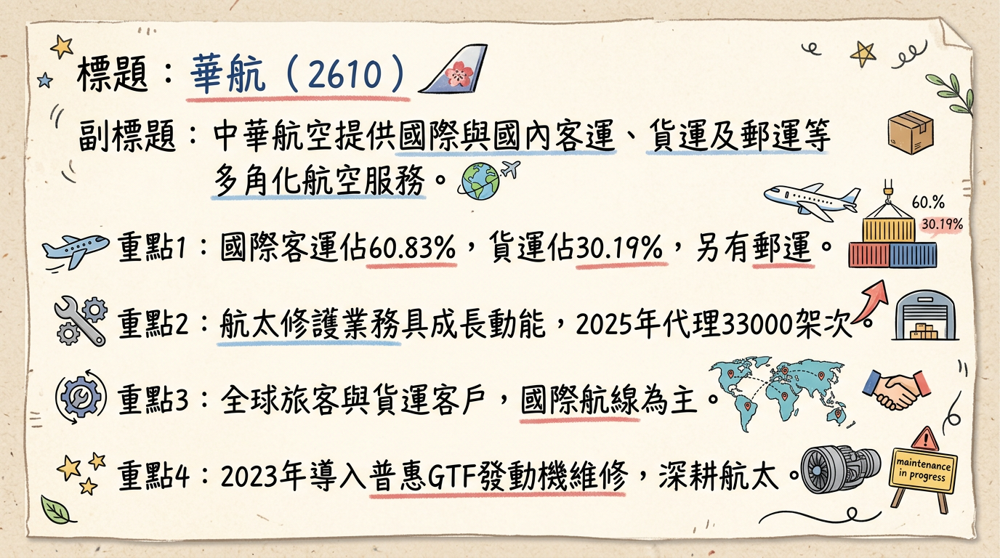
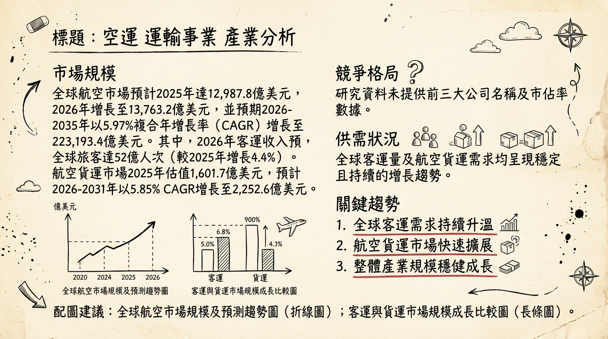
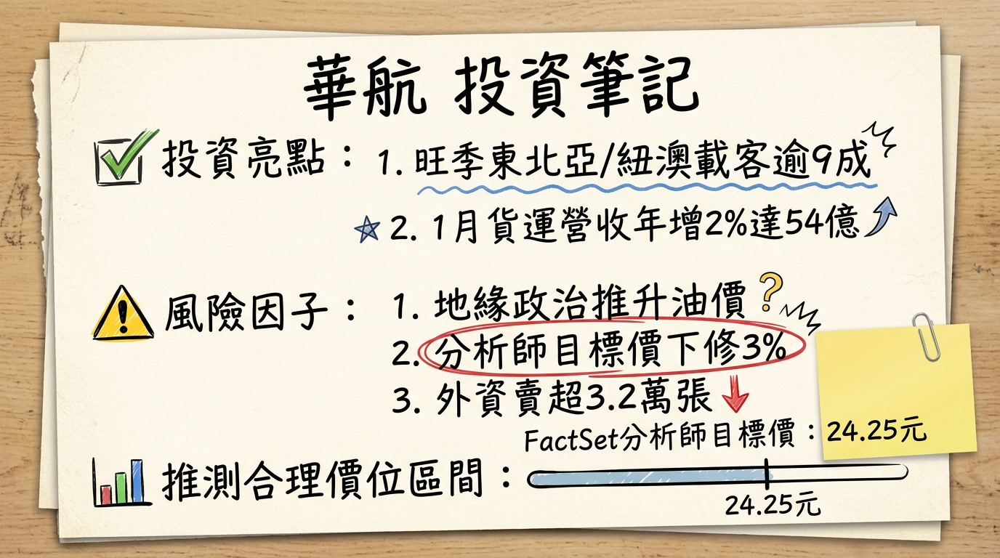

2610 華航 深度研究報告
一句話摘要
華航（2610）受惠於疫後客運強勁復甦及AI、半導體高科技產品帶動的航空貨運需求，2025年全年營收創歷史新高。展望2026年，全新機隊交付與全球航網擴張將持續推升營運成長，儘管油價波動與地緣政治風險仍需密切關注，但公司看好客貨雙引擎效益持續發酵，力拚營收獲利再創新高。
公司概覽
中華航空（2610）主要業務為提供航空運輸服務，核心產品與服務包括國際及國內的客運、貨運及郵運。公司亦提供地勤服務、機上銷售、倉儲物流、飛機修護，以及航空電腦作業承攬、飛機零組件及航空器材的代理與銷售，以及飛機出租與銷售等多元服務。
營收結構（截至2026年1月資料）
| 業務項目 | 營收佔比 |
|---|
| 客運收入 | 60.83% |
| 貨運收入 | 30.19% |
| 其他營業收入 | 8.98% |
華航並無傳統意義上的「製造基地」，其主要營運與機隊維修基地設於台灣桃園市，靠近桃園國際機場。公司積極深耕航太修護領域，預計2025年顧客航線機務代理業務可超過33,000架次，年增9%，並已於2020年加入美國普惠GTF發動機維修聯盟，2023年導入首部維修發動機。
所屬細分產業與相關題材
華航所屬產業為「航運業」，主要相關題材涵蓋：
- 客運復甦與觀光題材： 疫後出遊熱度不減、機票價格維持高檔、政府「還假於民」政策有利長天期假期。東北亞、東南亞、紐澳航線需求強勁，高艙等客源增加。
- 航空貨運： 受惠於AI伺服器、半導體、高科技產品及網通設備運輸需求旺盛，跨境電商貨量持續成長。華航為台灣唯一貨機涵蓋歐、美、亞三大洲的航空公司。
- 機隊現代化與擴充： 2026年將迎接全新787機隊，並持續引進A321neo客機，規劃至2029年起交付15架A350-1000及15架777-9客機。
- 永續發展 (ESG)： 華航積極推動永續治理與ESG作為，2026年勇奪標普全球永續年鑑Top 1%肯定，為全球唯一獲此殊榮的航空公司。
核心競爭優勢
獨特的貨運航網優勢： 華航作為台灣唯一貨機涵蓋歐、美、亞三大洲的航空公司，具備拓展多樣貨源的靈活性與彈性，特別受惠於全球高科技產品（如AI伺服器、半導體）的運輸需求。
深厚的航太修護能力： 華航持續投資航太修護發展，加入美國普惠GTF發動機維修聯盟並導入維修發動機，不僅能提升自身機隊維護效率，更為未來擴展第三方維修業務奠定基礎，創造額外營收動能。
機隊現代化與擴充計畫明確： 公司積極引進全新787機隊及A321neo客機，並有長期機隊規劃至2029年，此現代化進程將提升燃油效率、擴大運能，並優化乘客體驗，強化市場競爭力。
客貨運雙引擎營運模式： 具備客運與貨運的均衡發展能力，可有效分散單一業務風險。在客運市場強勁復甦的同時，航空貨運也因高科技產品及電商需求保持旺盛，形成穩固的成長雙引擎。
ESG永續領導地位： 華航在永續發展領域屢獲國際肯定，2026年榮膺S&P Global永續年鑑Top 1%，這不僅有助於提升品牌形象，亦能吸引注重ESG的投資者，並在綠色金融趨勢下取得潛在優勢。
財務分析
近六個月月營收趨勢
| 月份 | 金額 (新台幣億元) | 月增率 MoM | 年增率 YoY |
|---|
| 2026年1月 | 177.99 | -5.29% | -7.71% |
| 2025年12月 | 187.94 | +8.89% | +1.82% |
| 2025年11月 | 172.60 | -4.68% | -0.26% |
| 2025年10月 | 181.07 | +14.06% | +5.70% |
| 2025年9月 | 158.75 | -7.97% | -0.84% |
| 2025年8月 | 172.52 | -2.75% | -2.78% |
- 2025年第四季季營收： 新台幣 541.60 億元，創單季歷史高點。
* (註: 2025年第四季毛利率、營業利益率、稅後淨利率及EPS尚未在公開資訊中明確列出。)
- 2025年第三季季營收： 新台幣 508.72 億元，季減 0.9%，年衰退 2.2%。
- 2025年第三季毛利率： 16.2%。
- 2025年第三季營業利益率： 8.45%。
- 2025年第三季EPS： 0.49 元。
全年度營收與 EPS 趨勢
- 2025年實際全年營收： 新台幣 2,090.9 億元，年增 2.56%，創下歷年新高。
- 2024年實際全年EPS： 2.38 元。
- 2025年預估EPS： 普遍預估介於 2.1 元至 2.63 元之間，FactSet中位數為 2.38 元 (截至2026年1月29日)。
法說會重點
最近一次法說會日期： 2025年11月12日
管理層對各產品線的具體說明與訂單能見度：
* 2025年12月，東北亞（首爾、東京、北海道、曼谷、吉隆坡）航線載客率接近 9 成。
* 預計2026年初，大洋洲（雪梨、布里斯本、墨爾本）航線訂位率預估超過 9 成。
* 持續優化航網布局：台北—釜山自2026年3月29日起增為每週18班；台北—布拉格自2026年4月2日起增至每週3班；紐約航線規劃自2026年8月5日起增為每週5班，並規劃逐步增為每日一班。
* 鳳凰城航線已於2025年12月3日開航，提供每週三班直飛服務，2025年12月及2026年1月平均訂位率超過 7 成。
* 2025年全年貨運收入達 668.31 億元，年增 10.08%，創年度新高，受惠於歐美耶誕節購物旺季帶動電商與跨境出貨需求，以及AI伺服器、半導體等電子產品穩定出貨。
* 預計2025年第四季為貨運傳統旺季，營業表現有望優於第三季，且貨價預期可再提升。
* 農曆年前補充庫存效應逐步顯現，AI伺服器、半導體及網通設備等高價值空運主力貨源需求持續增溫，預期將支撐2026年第一季貨運表現。
產能利用率與資本支出計畫：
- 機隊規劃： 2026年將迎接全新787機隊，同時持續引進A321neo客機，穩健擴展機隊運能。預計2026年有五到七架新機加入。
- 航太修護發展： 預計2025年顧客航線機務代理業務可超過33,000架次，年增9%。
- 資本支出金額： 法說會中未提供具體數字，但從機隊規劃顯示有重大資本支出計畫。
管理層對下季/下半年 Guidance：
- 2025年第四季： 貨運有望在聖誕節等運輸需求帶動下進入高峰期，營業表現有望優於第三季，且貨價預期可再提升。
- 2026年： 董事長高星潢表示，2026年將迎來787機隊，持續力拚營收新高。預期農曆年節前補充庫存效應將逐步顯現，華航將靈活運用現有貨機機隊，依市場需求彈性調整營運策略，持續擴大營收與獲利成長動能。整體航空市場展望樂觀，疫後出遊熱度不減，機票價格有望維持高檔，東南亞轉機市場需求與高艙等客源增加，航空貨運市場受惠於AI及半導體需求續旺，且預估2026年油價將走低，有望降低成本。
券商觀點
券商目標價與評等
| 券商名稱 | 目標價 (新台幣元) | 評等 | 日期 |
|---|
| 中國信託綜合證券 | 24.0 | 未列明 | 2026年1月9日 |
| 群益證券 | 25.0 | 看多 (原中立) | 2026年1月13日 |
| FactSet 共識目標價 | 24.25 | 未列明 | 2026年3月2日 (由25元下修) |
| 券商名稱 | 2025年 EPS 預估 (元) | 2026年 EPS 預估 (元) | 日期 |
|---|
| 中國信託綜合證券 | 2.22 | 1.92 | 2026年1月9日 |
| 群益證券 | 2.52 | 2.46 | 2026年1月13日 |
| FactSet 共識預估 (中位數) | 2.38 (最高2.63,最低2.1) | 2.08 (最高2.74,最低1.49) | 2026年1月29日 (2025年EPS由2.5下修) |
- 群益證券： 於2026年1月13日將評等由「中立」轉向「看多」。
- FactSet 共識目標價： 於2026年3月2日從25元下修至24.25元，幅度約3%，反映市場共識展望的微幅調整。
財報深度分析
利潤率趨勢 (近 8 季)
| 季度 | 毛利率 (%) | 營業利益率 (%) | 稅後淨利率 (%) | EPS (元) | 歸屬母公司稅後淨利 (新台幣億元) |
|---|
| 2025年Q3 | 16.20 | 8.45 | 6.58 | 0.49 | 29.56 |
| 2025年Q2 | 未找到 | 未找到 | 未找到 | 0.69 | 41.90 |
| 2025年Q1 | 未找到 | 未找到 | 未找到 | 0.69 | 41.90 |
| 2024年Q4 | 16.80 | 8.93 | 7.60 | 2.38 (全年) | 143.83 (全年) |
| 2024年Q3 | 未找到 | 未找到 | 未找到 | 1.71 (前三季累計) | 未找到 |
| 2024年Q2 | 未找到 | 未找到 | 未找到 | 未找到 | 未找到 |
| 2024年Q1 | 未找到 | 未找到 | 未找到 | 0.51 | 31.00 |
2025年全年營收達2,090.9億元創歷史新高，主要受惠於客運載客率維持高檔與航網布局優化，以及AI伺服器出貨推升貨運營收成長，客貨運雙引擎驅動營運成長動能。雖然2025年Q3營收季減且年衰退，毛利率與營業利益率相較2024年Q4略有下滑，但整體而言，疫後客運復甦和高價值貨運需求支撐了公司獲利能力。展望2026年，華航看好客、貨運市場需求持續暢旺，且國際專家普遍認為油價走低，有望降低營運成本，進一步改善利潤率。
資本支出與產能
* 2025年Q3：-106.29 億元
* 2025年Q2：-191.73 億元
* 2025年Q1：-65.27 億元
* 2024年Q4：-68.36 億元
* 趨勢顯示近幾季投資現金流和資本支出呈現較高的流出，反映公司持續進行機隊汰換和擴充，為未來運能成長做準備。
*
2026年： 將迎接24架全新波音787機隊交機，其中明年預計交付五架，擔任中長程及區域航線主力。持續引進三架A350-900及13架A321neo客機強化運能。
* 長期規劃： 至2029年起，將有嶄新的15架A350-1000及15架777-9客機機隊開始交付。
* 航線擴張： 因應新機加入，華航將擴大北美及歐洲市場增班，並積極拓展重點航線。
* 2025年Q3：折舊73.61 億元，攤銷0.45 億元。
* 2025年Q2：折舊72.90 億元，攤銷0.49 億元。
* 2025年Q1：折舊71.81 億元，攤銷0.48 億元。
* 2024年Q4：折舊72.24 億元，攤銷0.49 億元。
* 年度折舊攤銷：2024年為294.7億元。隨著新機陸續交付，未來折舊攤銷費用將持續增加。
存貨與營運週轉
| 季度 | 存貨週轉天數 (天) | 應收帳款收現天數 (天) | 存貨週轉率 (次) |
|---|
| 2025年Q3 | 24.93 | 18.52 | 3.61 |
| 2025年Q2 | 26.45 | 18.74 | 3.40 |
| 2025年Q1 | 25.99 | 19.35 | 3.46 |
| 2024年Q4 | 24.65 | 18.63 | 3.65 |
華航的存貨週轉天數和應收帳款收現天數在近幾季維持相對穩定，存貨週轉天數約在25-26天之間，應收帳款收現天數約在18-19天，顯示公司營運週轉效率良好，並無明顯存貨異常堆積或備料現象。
股權異動
- 董監事/大股東申報轉讓紀錄： 2026年1月資料顯示，主要大股東為財團法人中華航空事業發展基金會，持股比率30.69%。未找到近期董監事/大股東申報轉讓的具體異動紀錄。
- 庫藏股買回紀錄： 華航最近一次庫藏股買回紀錄為2018年8月9日至2018年10月9日，目的為維護公司信用及股東權益，預定買回50,000千股，實際買回50,000千股，已執行完畢。未找到2024-2026年的庫藏股買回紀錄。
- 可轉換公司債 (CB)： 未找到2024-2026年華航發行可轉換公司債的相關資訊。
- 增減資計畫： 未找到2024-2026年華航有現金增資或減資計畫的相關資訊。
- 股利政策：
*
2025年發放年度 (對應2024年度盈餘)：現金股利0.7958元，除息日為2025年7月16日。
* 2024年發放年度 (對應2023年度盈餘)：現金股利0.6901元，除息日為2024年7月18日。
* 目前華航以發放現金股利為主，未發放股票股利。
其他財報重點
- 負債比率： 2025年Q3為70.70%，相較2024年Q4的72.34%呈現下降趨勢，財務結構持續優化。
- 自由現金流量： 2025年Q3為9.44億元；2025年Q2為-81.66億元；2025年Q1為3.74億元；2024年Q4為106.02億元。自由現金流量波動較大，主要受資本支出規劃與時程影響。
- 業外收支： 2024年業外損益合計為10.74億元，佔營收0.53%。2025年Q3業外收支佔稅前淨利比為-5.86%。
產業分析
全球航空市場規模與成長率
- 整體航空市場： 預計2025年達到12,987.8億美元，2026年增長至13,763.2億美元。預計2026年至2035年將以5.97%的複合年增長率（CAGR）增長，2035年達到23,193.4億美元。
- 客運市場： 2026年全球航空業總收入預計1.053兆美元，其中客運收入預計為7,510億美元，有償客運公里數（RPK）預計增長4.9%。全球旅客總數預計2026年達到52億人次，較2025年增長4.4%。
- 貨運市場：
* 預計2025年估值1,601.7億美元，2026年增長至1,695.3億美元，並預計2026年至2031年以5.85%的CAGR達到2,252.6億美元。
* 另有報告估計2025年為1,771.1億美元，2032年增長至2,735億美元，CAGR為6.40%。
* 還有報告預計2025年為3,724.7億美元，2033年達到5,936.7億美元，CAGR為6%。(數據差異可能源於不同統計範圍)。
* 2026年航空貨運收入預計達到1,580億美元，貨運量預計達到7,160萬噸，較2025年增長2.4%。
- 供需狀況： 航空業在2026年前基本面看好，預計2026年需求將超過供應。國際航空運輸協會（IATA）指出，2025年因供應鏈挑戰，可用座公里數（ASK）供應增長未能跟上客運需求（RPK），導致載客率達83.6%歷史新高。儘管如此，全球航空產業仍面臨供應鏈瓶頸，累積交機缺口逾5,300架飛機，訂單積壓達17,000架，約為現有機隊的60%，表明供應受限將持續存在。亞洲太平洋地區雖旅遊需求復甦，但仍面臨供給過剩挑戰。
- 產業平均毛利率水準： IATA預計全球航空業淨利率在2026年將改善至3.9%，總淨利潤預計達410億美元創歷史新高。每位旅客平均淨利潤約7.90美元。IATA秘書長Willie Walsh指出，行業利潤率仍「薄如蟬翼」，未能持續賺取超過資本成本的利潤。
競爭格局
- 全球前5大公司及其市佔率： 未找到2025-2026年的最新全球前五大航空公司及其市佔率資料。亞太地區航空貨運量佔全球約31%。
- 華航 vs 主要競爭對手
*
主要競爭對手： 長榮航空、國泰航空、大韓航空、日本航空、新加坡航空等。貨運部分包括聯邦快遞、DHL、UPS等。
* 技術： 華航深耕「航太修護」，加入美國普惠GTF發動機維修聯盟，提升維修技術實力。
* 產能： 華航機隊維修基地設於桃園。航空業整體面臨供應鏈瓶頸（飛機交付延遲、引擎供應問題），對所有航空公司擴產皆構成挑戰。
* 客戶： 涵蓋商務客、觀光客及全球貨主。
* 價格： 受市場供需、燃油成本、競爭策略等多重因素影響，缺乏2025-2026年具體價格策略數據。
台灣同業比較 (未找到 2025-2026 年最新可比數據)
| 公司 | 2025年營收 (新台幣億元) | 2025年毛利率 (%) | 2025年EPS (元) |
|---|
| 華航 (2610) | 2,090.9 | (未公佈完整財報) | 2.1 - 2.63 (預估) |
| 長榮航 (2618) | 未找到最新可比數據 | 未找到最新可比數據 | 未找到最新可比數據 |
* 趨勢： 航空業致力於2050年實現淨零碳排放，SAF應用是關鍵。
* 影響： 2026年SAF購買成本預計45億美元，供應量僅佔總燃油的0.8%。SAF成本高昂且受再生能源競爭影響，將增加航空公司營運成本。
數位化與人工智慧 (AI) 應用：
* 趨勢： 航空貨運系統數位化、AI應用日益普及，優化航線規劃、提高載貨率、預測需求、即時貨物追蹤。
* 影響： AI相關產品貿易高度依賴航空運輸，持續推動貨運需求。數位化與AI提高營運效率、降低錯誤、優化供應鏈，對成本控制和服務品質提升至關重要。
機隊現代化與供應鏈挑戰：
* 趨勢： 全球航空旅行需求增長，但機隊現代化受供應鏈瓶頸嚴重影響，飛機交付延遲。
* 影響： 航空公司平均機齡超15年，達到歷史最高水平，導致燃油效率改善緩慢（僅1%）。這增加維護成本，並限制未來運力擴張和競爭力。
對華航而言的具體機會和威脅
*
航空貨運需求穩健： 受惠於跨境電商、供應鏈重組、醫藥冷鏈及AI高價值貨物運輸需求，華航作為主要貨運航空公司，有望抓住市場機遇。
* 客運市場復甦： 全球旅遊需求持續復甦，尤其亞太地區客運量預計2026年增長7.3%，華航客運業務有望進一步提升。
* 航太修護能力提升： 加入普惠GTF發動機維修聯盟，有望擴展第三方維修業務，增加營收來源。
* 數位化轉型： 投資AI與數據分析可優化營運，提升效率與客戶體驗。
*
供應鏈瓶頸： 全球飛機及零組件供應鏈問題導致交機延遲，限制華航運力增長和燃油效率改善。
* 燃油成本與SAF成本： 油價波動及永續航空燃料（SAF）的額外成本將增加營運開支。
* 地緣政治風險： 國際貿易政策波動和地緣政治衝突可能影響全球貿易流向及航線風險。
* 產業利潤率偏低： 航空業整體淨利率仍不高，且低於資本成本，盈利能力存在挑戰。
* 亞太地區供給過剩： 區域內供給過剩可能加劇競爭壓力。
相關投資題材連結
- 人工智慧 (AI)： AI應用於貨物追蹤、需求預測、航線規劃，提升航空貨運效率。高價值、時間敏感的AI相關產品（如半導體）運輸對航空貨運需求旺盛。預測性維護系統也提高飛機利用率。
- 永續發展/綠色能源： 航空業對SAF的投資與發展與綠色能源題材緊密相連，符合ESG投資趨勢。
- 全球電子商務 (E-commerce)： 電子商務的快速發展是航空貨運增長主要驅動力，尤其跨境電商對快速可靠的航空物流需求強勁，華航直接受益。
近期催化劑
以下為台灣時間2026年3月6日，華航近三個月（2025年12月 – 2026年3月）主要利多/利空事件：
- 2026年3月5日：利多 永續發展獲國際肯定，勇奪2026年標普全球永續年鑑Top 1%肯定，為全球唯一榮膺此殊榮的航空公司。
- 2026年3月3日：利空 地緣政治風險與油價上漲對股價造成壓力，法人普遍採取保守評價。
- 2026年3月2日：利空 FactSet分析師將華航目標價中位數由25元下修至24.25元，降幅3%。
- 2026年3月1日：利空 外資賣超華航3.2萬張。
- 2026年2月23日：中性偏多 1月合併營收為177.9億元，月減5.3%、年減7.7%。客運載客率逾九成，貨運年增2%。法人外資近期買超，主力籌碼集中度提升。
- 2026年1月29日：利空 FactSet分析師將2025年EPS預估中位數由2.5元下修至2.38元。
- 2026年1月21日：利多 FactSet分析師上修2025年EPS預估中位數由2.35元至2.5元 (此為舊數據，後於1月29日下修)。
- 2026年1月12日：利多 2025年全年合併營收達2,090.9億元，年增2.56%，創歷年新高；第四季單季營收541.60億元亦創單季歷史高點，達成「全年、單季雙高峰」。
- 2025年12月29日：利空 FactSet分析師下修2025年EPS預估中位數由2.22元至2.2元，目標價由22元下修。
- 2025年12月22日：利多 AI伺服器需求推升北美空運價，航空雙雄對2026年航空貨運市場普遍樂觀，預期價量齊揚。
- 2025年12月21日：利多 華航董事長高星潢對2026年客貨運市場展望有信心，預期將是雙好榮景。新機加入、政府「還假於民」政策皆為利多。
- 2025年12月8日：利多 宣布2026年將迎接24架全新787機隊，準備北美及歐洲增班，預計推升2026年營收、獲利成長。
⭐ 成長動能時間軸
*
機隊更新： 引進五架空中巴士A350-900長程客機與八架A321neo中短程客機。
* 航線開拓： 2025年12月3日首航台北-鳳凰城新航點（每周三班）。
* 航太修護： 顧客航線機務代理業務超過33,000架次，年增9%。
* 貨運需求： 歐美耶誕節購物旺季帶動電商與跨境出貨需求，AI伺服器、半導體等電子產品出貨穩定。
*
機隊交付： 將迎接全新24架波音787機隊（明年預計交付五架），擔任中長程及區域航線主力。規劃淘汰6架空巴330型客機、4架波音737客機。總客機機隊預計達75架。
* 航線擴張：
* 2026年3月29日起：台北—釜山增為每週18班。
* 2026年4月2日起：台北—布拉格增至每週3班。
* 2026年8月5日起：紐約航線規劃增至每週5班，並計畫逐步增為每日一班。
* 需求面：
* 客運： 疫後出遊熱度不減、長天期假期增加、東南亞轉機市場與高艙等客源持續增長。
* 貨運： 全球CSP大廠資本支出增加帶動AI基礎建設需求，半導體、AI伺服器、網通設備等高價值空運主力貨源需求持續暢旺，全球電商貨品出貨成長。
* 成本改善： 國際專家普遍預期2026年油價約在80美元區間波動，有望降低燃油成本。
*
機隊交付： 嶄新的15架A350-1000及15架777-9客機機隊將開始交付。
*
航太修護： 持續投入機師訓練資源，與UND Aerospace飛行學校合作培育機師。
* 新市場： 透過聯航合作擘劃綿密航網，強化樞紐優勢，拓展轉運商機，打造航空聯盟新局。
2026 展望
成長動能
客運強勁復甦與航網擴張： 疫後旅遊需求持續旺盛，政府「還假於民」政策及連假出國訂位熱潮將使客運量能保持高檔。隨著新機隊陸續到位，北美、歐洲及亞洲航網的擴張與加密，預計將大幅提升載客率與高艙等客源收入。
航空貨運需求暢旺： 受益於全球雲端服務供應商（CSP）大廠對AI基礎設施的資本支出增加，以及半導體、AI伺服器、網通設備等高價值電子產品的運輸需求，加上跨境電商的快速成長，航空貨運市場將維持高價量表現。華航作為貨運主力，有望持續受惠。
機隊現代化與營運效率提升： 2026年起全新波音787機隊的引入，將逐步汰換舊型機隊，顯著提升燃油效率並降低維護成本。現代化機隊不僅能強化運能，也改善乘客體驗，鞏固市場競爭優勢。
油價預期走低： 國際專家普遍預估2026年油價將穩定在每桶80美元區間波動，若油價如預期走低，將有效降低華航最主要的營運成本之一——燃油成本，直接推升獲利。
航太修護業務成長： 華航在航太修護領域的深耕與技術提升，未來有望擴展第三方維修業務，成為客貨雙引擎外的穩定成長動能。
風險因子
油價劇烈波動： 儘管預期油價走低，但中東地緣政治緊張局勢仍可能導致油價急漲。燃油成本佔比高，若航空燃油年均價上升10美元，華航一年將增加1.6億美元燃油成本，直接壓縮獲利。
地緣政治與經濟不確定性： 全球地緣政治衝突（如中東局勢）可能影響航線安全、增加營運風險，並導致貿易流向不確定性，進而衝擊航空客貨運需求及法人評價。美中關稅戰發展也可能對全球貨運產生負面影響。
供應鏈瓶頸導致交機延遲： 全球飛機及零組件供應鏈問題持續，可能導致新機交付延遲，影響華航的運力擴張計畫和機隊汰舊換新進程，進而限制燃油效率改善與新航線拓展。
區域市場競爭加劇： 亞太地區航空市場雖然需求復甦，但同時也面臨供給過剩的挑戰，這可能加劇區域內的價格競爭，影響華航的獲利能力。
新機交付後的初期成本壓力： 雖然新機隊帶來長期效益，但在初期階段，隨之而來的折舊、融資利息及新機導入訓練等營運成本增加，可能短期內對獲利表現產生壓抑效果。
投資結論
綜合以上分析，華航（2610）在2026年具備明確的成長動能，投資亮點條列如下：
強勁的客貨運雙引擎動能： 2025年營收創歷史新高，顯示客運復甦力道強勁，搭配AI、半導體及電商帶動的高價值航空貨運需求，預期此雙引擎將在2026年持續發酵，支撐公司營收與獲利成長。
機隊現代化與航網擴張提升長期競爭力： 2026年起全新波音787機隊的陸續交付，不僅能有效提升運能、燃油效率及乘客體驗，更有助於拓展北美、歐洲及亞洲等重點航線，強化樞紐優勢及轉運商機，為華航未來數年的營運成長奠定基礎。
穩健的財務結構與潛在成本優化： 公司負債比率持續優化，顯示財務體質穩健。同時，國際油價預期在2026年趨於穩定甚至可能走低，將有助於降低華航最主要的營運成本，進一步改善利潤率。
ESG領導地位與航太修護潛力： 華航在永續發展領域的國際肯定，有助於品牌價值提升並吸引ESG投資。航太修護業務的持續投入，亦為公司開闢了額外的營收成長機會。
投資建議： 儘管需留意油價波動及地緣政治等短期風險，但考量華航穩健的產業地位、明確的成長動能及分析師共識預期，建議投資人可於合理區間進行配置。參考券商目標價普遍落於24元至25元之間，最新FactSet共識目標價為24.25元，基於2026年的成長潛力與營運改善預期，建議投資目標價區間為 24.5元至26.5元。
本報告由 AI 自動產生，資料來源為公開網路資訊，僅供參考，不構成投資建議。產生時間：2026-03-06 13:02
📊 資訊卡


